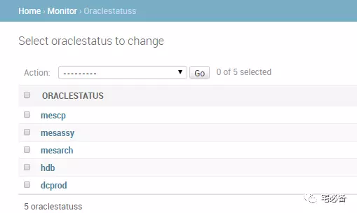
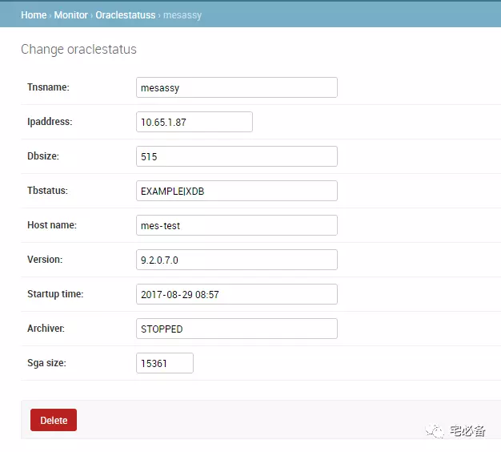

使用自定义命令获取Oracle监控指标
这个专题主要内容有：
-
如何新建自定义命令
-
如何使用自定义命令获取Oracle监控指标并写入数据库
-
如何将获取到的数据库监控指标在前端显示
上节我们介绍了如何新建一个自定义命令
这节讲述如何使用其获取Oracle监控指标并保存在数据库中
开发环境
操作系统:CentOS 7.3
Python版本 :2.7
Django版本: 1.10.5
操作系统用户:oracle
新建MySQL表存放监控数据
我们日常在运维Oracle数据库时有很多指标需要考虑，这里我挑选了一些日常检查的项目
1.添加models
vim models.py
class oraclestatus(models.Model):
tnsname=models.CharField(max_length=100)
ipaddress=models.GenericIPAddressField()
dbsize=models.CharField(max_length=50)
tbstatus=models.CharField(max_length=200)
host_name=models.CharField(max_length=50,default='host')
version=models.CharField(max_length=50,default='10')
startup_time=models.CharField(max_length=50,default='2015')
archiver=models.CharField(max_length=20,default='opened')
sga_size=models.IntegerField(default=0)
def __unicode__(self):
return self.tnsname
class Meta:
app_label='monitor'
2.创建数据库表
[oracle@asensvr-oms mysite]$ python manage.py makemigrations
[oracle@asensvr-oms mysite]$ python manage.py migrate
3.加至admin管理
from django.contrib import admin
# Register your models here.
from monitor.models import oraclelist
from monitor.models import oraclestatus
admin.site.register(oraclelist)
admin.site.register(oraclestatus)
以上就完成了表的创建，一些字段的解释如下:
-
dbsize 为数据库的大小，单位为G
-
tbstatus为表空间的状态，当使用率大于90%时候会显示出具体的表空间名
-
archiver为是否启用了归档
编写自定义命令获取指标并存入数据库
vim oraclemonitor.py
from django.core.management.base import BaseCommand
from monitor.models import oraclelist
from monitor.models import oraclestatus
from monitor.command.getoracleinfo import *
oraclestatus.objects.all().delete()
ip=oraclelist.objects.all().order_by('tnsname')
for i in ip:
if i.monitor_type==1:
ipaddress1=i.ipaddress
username=i.username
password=i.password
port=i.port
tnsname1=i.tnsname
try:
db = cx_Oracle.connect(username+'/'+password+'@'+ipaddress1+':'+port+'/'+tnsname1 ,mode=cx_Oracle.SYSDBA)
except Exception , e:
content= (i.ipaddress+' is Unreachable,The reason is '+str(e)).strip()
print content
else:
cursor = db.cursor()
dbsize=getdbsize(cursor)
tbstatus=getspace(cursor)
oracle_info=check_info(cursor)
sga_size=get_sga_size(cursor)
cursor.close()
db.close()
if oraclestatus.objects.filter(ipaddress=ipaddress1).filter(tnsname=tnsname1):
status=oraclestatus.objects.filter(ipaddress=ipaddress1)
status.update(**{'tnsname':tnsname1,'ipaddress':ipaddress1,'dbsize':dbsize,'tbstatus':tbstatus,'host_name':oracle_info[0],'version':oracle_info[1],'startup_time':oracle_info[2],'archiver':oracle_info[3],'sga_size':sga_size})
else:
createtnsname=oraclestatus(ipaddress=ipaddress1,tnsname=tnsname1)
createtnsname.save()
status=oraclestatus.objects.filter(ipaddress=ipaddress1).filter(tnsname=tnsname1)
status.update(**{'tnsname':tnsname1,'ipaddress':ipaddress1,'dbsize':dbsize,'tbstatus':tbstatus,'host_name':oracle_info[0],'version':oracle_info[1],'startup_time':oracle_info[2],'archiver':oracle_info[3],'sga_size':sga_size})
这个程序讲解如下:
-
为防止不需要监控的数据库留下，先清空oraclestatus表的数据
-
然后从oraclelist表中获取信息
-
遍历每个数据库，当monitor_type为1时继续
-
利用取出来的信息连接数据库，当连接成功后执行相应的程序获取监控数据
-
获取完成后关闭数据库连接
-
接下来首先利用filter方法判断oraclestatus表中是否已经有该实例，如果有则使用update更新该行
-
如果没有则首先创建该行，然后再更新该行，save方法为commit insert动作
一些注意事项
-
由于可能同一台主机有多个实例，这里判断tnsname和ip地址2个字段
-
各个函数的内容请自行查看源代码，很容易理解
-
由于我这有9i的数据库，所以SGA大小我用的是 sga max size 而不是sga target
-
数据库大小用的是datafile的大小而不是segment的大小
最终结果


可以看出数据库的信息已经保存在MySQL数据库中了
设置自动运行
这里我们设置每天凌晨进行一次，并重定向所有日志至一个文件
这样我们可以通过检查该日志文件判断脚本是否正常运行
59 23 * * * /usr/bin/python2.7 /home/oracle/mysite/manage.py oraclemonitor >>/home/oracle/crontab.log 2>&1
源代码位置
欢迎访问我的github主页查看源码
https://github.com/bsbforever/wechat_monitor
这节介绍了如何利用自定义命令获取Oracle数据库指标并保存在MySQL数据库中
下节介绍如何将这些数据展示在一个页面上